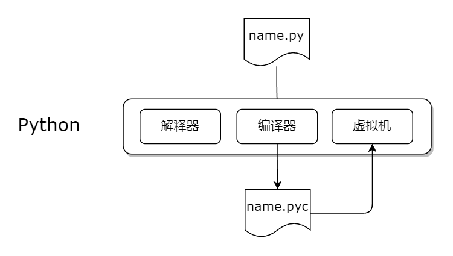

Python
Python 程序中的语句称为源代码，将程序文件称为源代码文件。根据约定，所有 Python 源代码文件都使用扩展名 .py 。

Python 由三个部分组成：运行语句的解释器、将 .py 文件转换为 .pyc 文件的编译器以及运行 .pyc 文件的虚拟机。
从键盘读取字符串
源代码如下，# 开头的表示注释行；input 是内置的标准函数读取输入；然后将用户的输出赋值给 name 变量；输出调用了字符串的 capitalize 函数，该函数将字符串的首字母大写。
使用 dir("") 可以查看字符串包含哪些函数。
使用 python name.py 命令运行程序。
从键盘读取数字
# age.py
age = int(input('How old are you today? '))
print('In 10 years you will be ' + str((age + 10)) + ' year old.')
需要注意的是需要将 age + 10 转换成字符串才能打印，否则 Python 将报错。
打印字符串
print 是内置的将字符串打印到标准输出的函数。
# print_test.py
print('hello', "world!")
print("你好")
print("世界！")
print("hello world!", end='')
print("你好世界！")
输出如下：
G:\suomea-projects\python-core>python print_test.py
hello world!
你好
世界！
hello world!你好世界！
G:\suomea-projects\python-core>
默认情况下 print 打印完指定的内容之后会添加一个换行符。
逻辑运算
Python 使用 True 和 False 表示布尔值。逻辑运算的结果为布尔值。
运算符
主要的逻辑运算符有：not、or、and、==、!=
>>> True == False
False
>>> True and False
False
>>> True or False
True
>>> not True
False
>>> True != False
True
优先级
如果逻辑运算表达式比较长，可以使用圆括号提升其内部表达式的优先级，优先级从高到底。
- 圆括号内部的表达式
- ==
- !=
- not and
- or
需要注意的是布尔表达式的求值过程 Python 采用了短路求值技巧。如果表达式的结果已经确定，还未计算到的表达式不会被执行，这样能够提高某些表达式的计算速度。
IF/ELSE
if/else
先来看一段简单的密码验证代码，使用了 if/else 关键字。
# password.py
pwd = input("What is your password? ")
if pwd == 'apple' :
print('Loggin on ...')
else :
print('Incorrect password!')
print("All done.", end='')
首先 if 作为判断语句的开头，其后紧跟布尔表达式，称为条件。
if 条件后面是一个冒号，从 if 关键字开始到冒号为止是一条 if 语句。
if 关键字、条件、冒号必须位于同一行。
else 代码块是可选的。
与 Java 不同的是，Python 使用缩进来表示代码块，在同一个代码块中，所有语句的缩进量必须相同。
if/elif
if/elif
# age.py
age = int(input("How old are you? "));
if age <= 2 :
print(" free")
elif 2 < age < 13 :
print(' child fare')
else :
print('adult fare')
print('All done!')
条件表达式
下面两种方式是等价的。
# food.py
food = input("What's your favorite food? ")
if food == 'lamb' :
reply = 'yuck'
else :
reply = 'yum';
print(reply)
# food.py
food = input("What's your favorite food? ")
reply = 'yuck' if food == 'lamb' else 'yum'
print(reply)
循环
rage 函数
range 是 Python 内置的函数，返回一个整数序列。使用 print(range__doc__) 查看文档。
range(stop) -> range object
range(start, stop[, step]) -> range object
Return an object that produces a sequence of integers from start (inclusive)
to stop (exclusive) by step. range(i, j) produces i, i+1, i+2, ..., j-1.
start defaults to 0, and stop is omitted! range(4) produces 0, 1, 2, 3.
These are exactly the valid indices for a list of 4 elements.
When step is given, it specifies the increment (or decrement).
for 循环
示例代码。
# for_test.py
# 0, 1, 2, 3, 4, 5, 6, 7, 8, 9
for i in range(10) :
print(i, end=', ')
print()
# 0, 1, 2, 3, 4, 5, 6, 7, 8, 9
for i in range(0, 10) :
print(i, end=', ')
print()
# 10, 8, 6, 4, 2,
for i in range(10, 0, -2) :
print(i, end=', ')
while 循环
示例代码。
计算阶乘
输入数字例如：10 输出：1 x 2 x 3 x 4 x 5 x 6 x 7 x 8 x 9 x 10 的结果
for
# for_fact.py
n = int(input('Enter an integer >= 0: '))
fact = 1;
for i in range(1, n + 1) :
fact = fact * i
print(str(n) + ' factorial is ' + str(fact))
while
# while_fact.py
n = int(input('Enter an integer > 0: '))
fact = 1
i = 1
while i <= n :
fact = fact * i
i = i + 1
print(str(n) + ' factorial is ' + str(fact))
跳出循环
break 关键字跳出当前循环；continue 关键字立即跳转到循环条件，即进入下一次循环迭代。